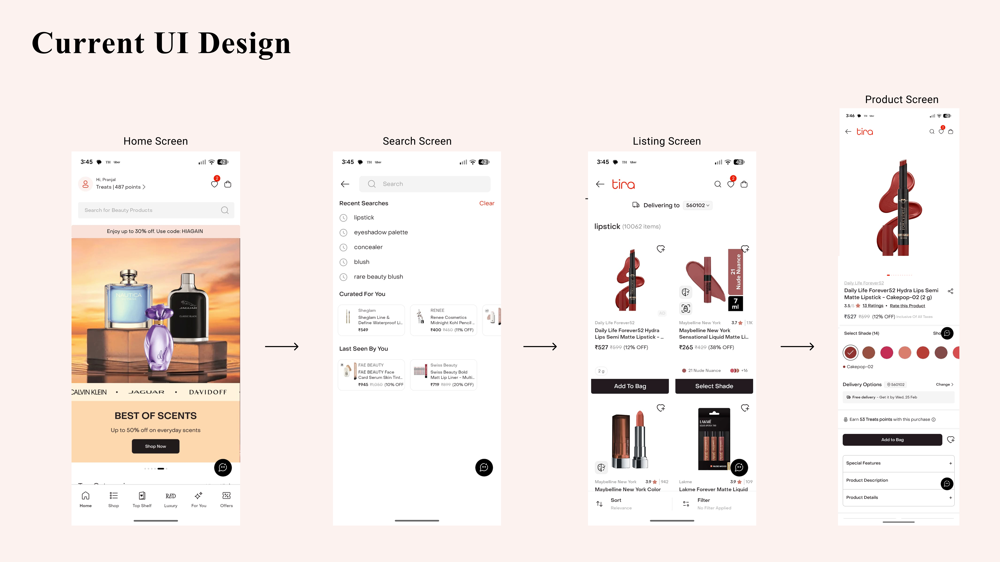
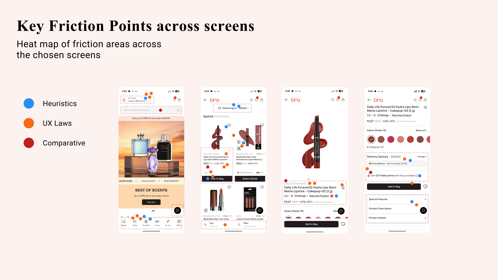
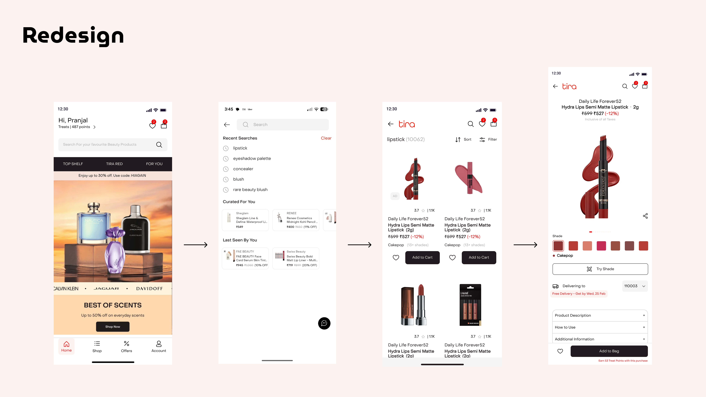

Original Tira app screens — Home, Search, Listing and Product screens
Problem Statement
Tira has a positioning of a beauty brand with a premium experience. How might we redesign the existing browsing experience to enhance the luxe brand perception among the GenZs and young millennials and improve the overall user conversion rate?
Why It Matters
The browsing experience plays a key role in determining if the users will convert their cart to actual purchase.
The Audit
The number of times UX Laws violated. Most violated laws include: Miller's Law and Jackob's Law.
Number of times Heuristics Principles violated. The most violated heuristics include: Error Prevention, Recall rather than Recognition and Consistency and Standards.
Across typography, colour tokens and button anatomy.

Heat map of friction areas across the chosen screens — Heuristics, UX Laws and Comparative
3 Key Decisions
Reimagined the listing card experience
Simplified the highest-traffic interface element by improving information hierarchy, reducing cognitive load, and creating clearer action differentiation for smoother browsing and decision-making.
Built a more consistent visual system
Introduced consistency across typography, buttons, icons and colour tokens to create a more cohesive and scalable user experience.
Improved the PDP purchase flow
Restructured product information and actions to better align with user decision-making, making the browsing to purchase journey more intuitive and streamlined.
The Redesigned Experience

Redesigned Tira app — Home, Search, Listing and Product screens